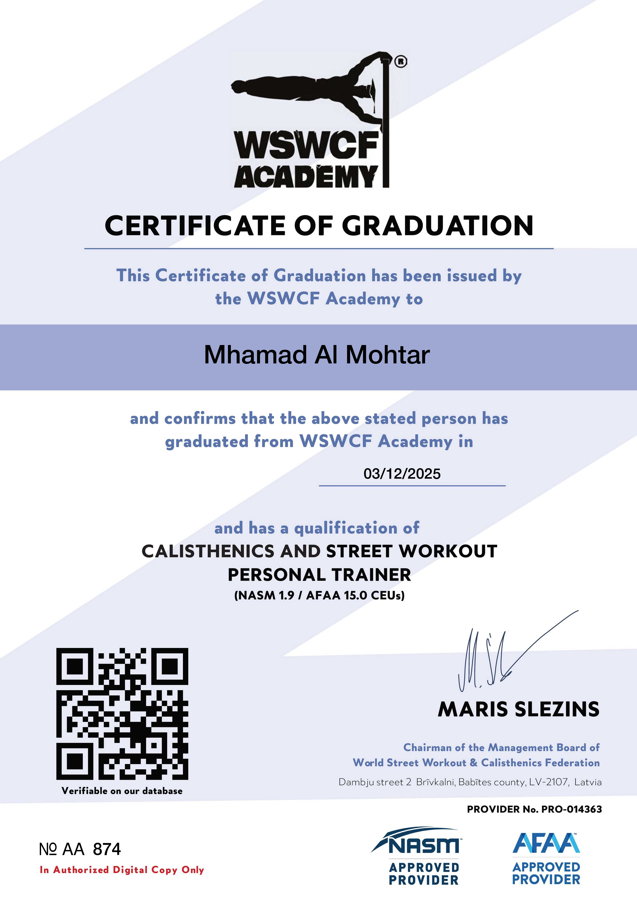

I am a certified WSWCF coach, specializing in freestyle and statics. Whether you are just starting out or working toward a new skill, we’ll build your training around your experience and goals.
With 4+ years in calisthenics and 9+ years in martial arts, I bring discipline, focus, and respect for good technique to every session. My coaching is structured and personal, but the atmosphere stays relaxed and motivating.
Through 1-on-1 and group online coaching, I help you train with a clear plan, regular feedback, and adjustments as you get stronger.
“If you’re ready to surprise yourself, let’s train.”
- WSWCF-certified coach
- Freestyle & statics specialist
- 1-on-1 and group online coaching
- Programs that adapt as you improve
